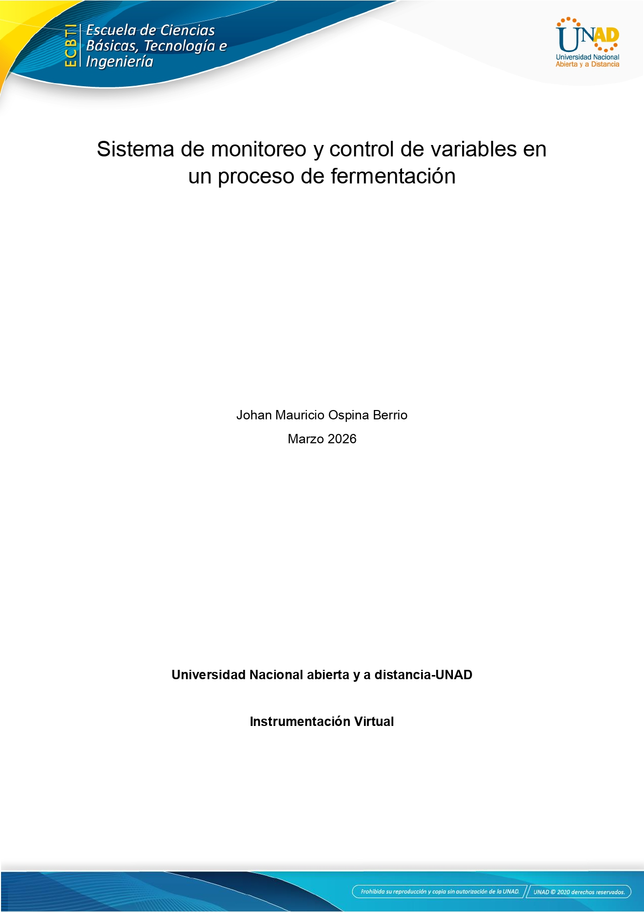

La Revista VOCES DE LA SIERRA difunde la cultura, espiritualidad y vida cotidiana del pueblo arhuaco. A través de relatos, fotografías y enseñanzas de los mamos, la publicación muestra su relación sagrada con la naturaleza y los retos que enfrentan para proteger su territorio ancestral. La revista busca acercar al lector a la visión arhuaca y a la importancia de la Sierra Nevada como “corazón del mundo”